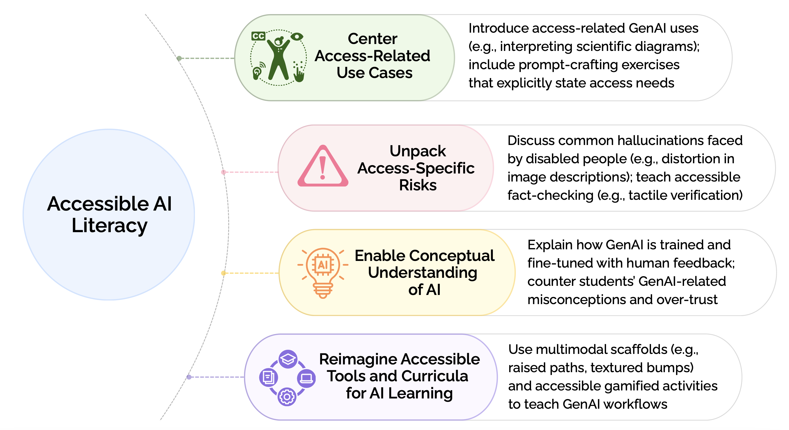
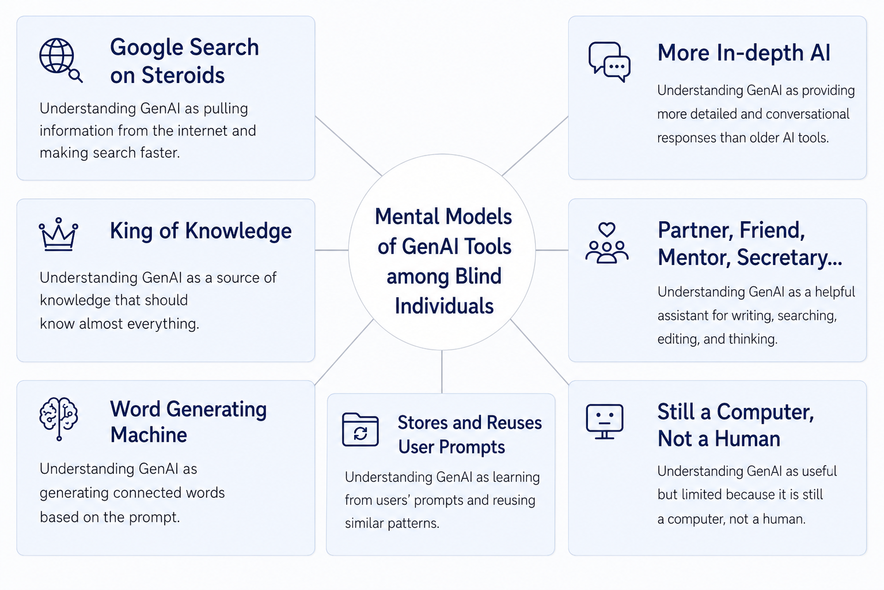
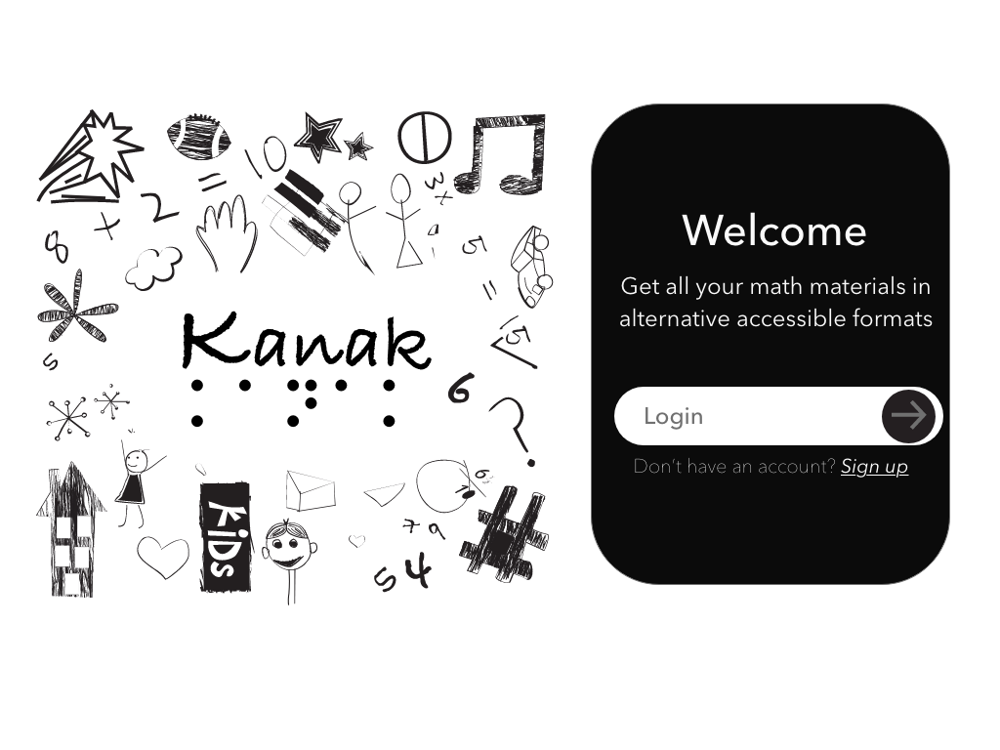
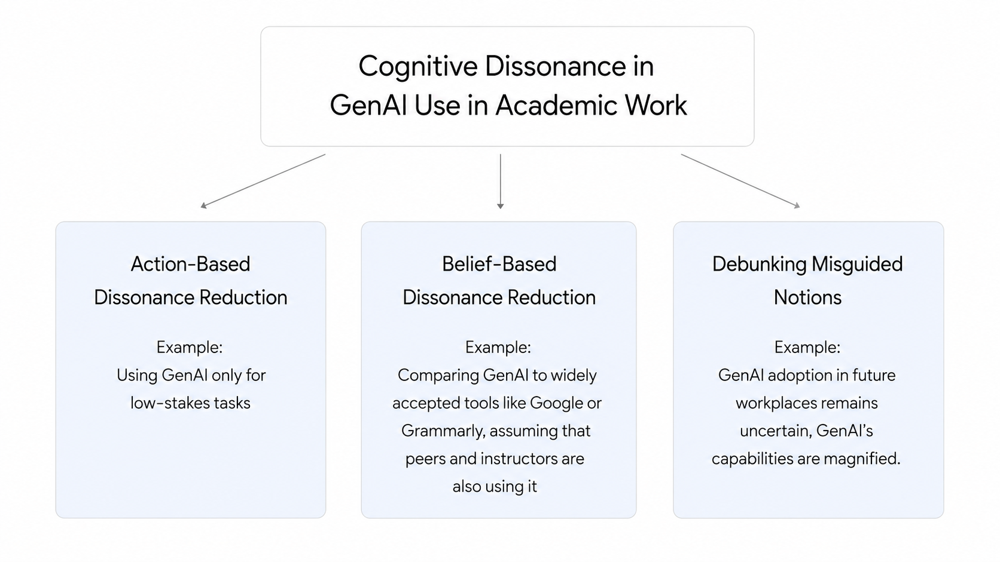
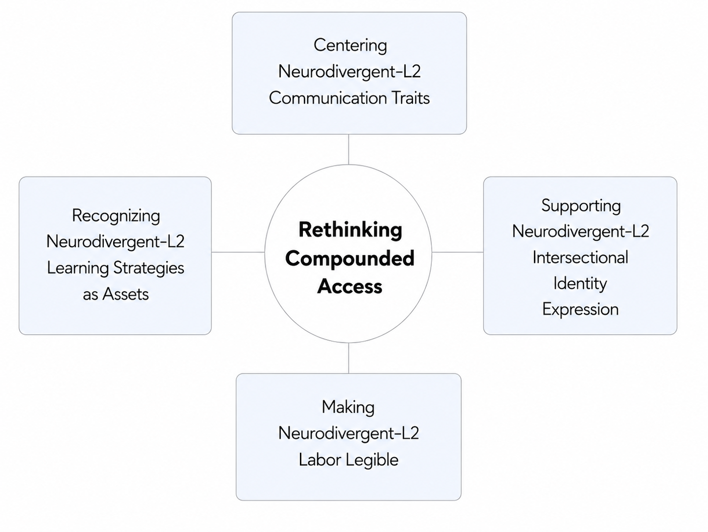

Rudaiba Adnin, Abir Saha, and Maitraye Das. 2026.
Proceedings of the 28th International ACM SIGACCESS Conference on Computers and Accessibility (ASSETS '26)
My research examines how emerging AI technologies can be made more accessible, understandable, and useful for people with different access needs. My current work centers on AI and Accessibility, GenAI Use in Mainstream Academic Work, and Neurodivergence and Language Learning.
The proliferation of Generative Artificial Intelligence (GenAI) tools has brought a critical shift in how people approach information retrieval and content creation in diverse contexts. Yet, we have limited understanding of how blind people use and make sense of GenAI systems. This research examines how blind people incorporate GenAI tools into everyday practices, navigate accessibility issues, inaccuracies, hallucinations, and biases, and develop mental models of how these systems work.
Generative Artificial Intelligence (GenAI) tools are also reshaping the educational landscape; yet, how teachers working with blind and low-vision (BLV) students integrate these tools into their pedagogical practices remains underexplored. This research examines how teachers of BLV students use GenAI in their instructional practices and how they educate BLV students about these tools. Teachers leveraged GenAI for personalized lesson planning and tasks specific to BLV education, while addressing biased GenAI responses favoring sighted teaching methods.



Rudaiba Adnin, Abir Saha, and Maitraye Das. 2026.
Proceedings of the 28th International ACM SIGACCESS Conference on Computers and Accessibility (ASSETS '26)
Kanak: Automating the Generation of Accessible STEM Materials for Blind and Low-vision Students.
Hari Prasath Palani, Rudaiba Adnin, and Shivangee Nagar. 2025.
Proceedings of the 37th Australian Conference on Human-Computer Interaction (OzCHI ’25)
“I look at it as the king of knowledge”: How Blind People Use and Understand Generative AI Tools.
Rudaiba Adnin and Maitraye Das. 2024.
Proceedings of the 26th International ACM SIGACCESS Conference on Computers and Accessibility (ASSETS ’24)
This research examines how students decide whether to disclose their use of generative AI in academic work and how teachers interpret and respond to undisclosed use.
Through an online survey with 97 college students, interviews with fifteen students, and interviews with nine teachers, this work investigates students’ strategies for hiding GenAI use, their justifications for non-disclosure, and teachers’ strategies for managing it. We use cognitive dissonance as a lens for understanding these choices and consider how higher education can promote greater transparency around GenAI use.

Examining Student and Teacher Perspectives on Undisclosed Use of Generative AI in Academic Work.
Rudaiba Adnin, Atharva Pandkar, Bingsheng Yao, Dakuo Wang, and Maitraye Das. 2025.
Proceedings of the 2025 CHI Conference on Human Factors in Computing Systems (CHI ’25)
Neurodivergent individuals face various barriers in academic and professional settings. Parallelly, English as second language (L2) speakers encounter distinct challenges when English is the medium of work and evaluation. Yet HCI has paid little attention to the intersection of these identities, where the demands of English-as-L2 use and neurodivergent cognition can magnify.
Through interviews with 19 Chinese students and professionals with ADHD, dyslexia, or dysgraphia, we found that cognitive processing strengths in Chinese became difficulties when applied to English, task-level demands compressed attentional resources, technologies both supported and constrained access needs, and authority and institutional contexts determined which access strategies were viable. We develop compounded access as an analytic framing to document the strategies participants developed and the frictions they encountered at the intersection of neurodivergence and L2.

Qiushi Liang, Rudaiba Adnin, and Maitraye Das. 2026.
Proceedings of the 28th International ACM SIGACCESS Conference on Computers and Accessibility (ASSETS '26)